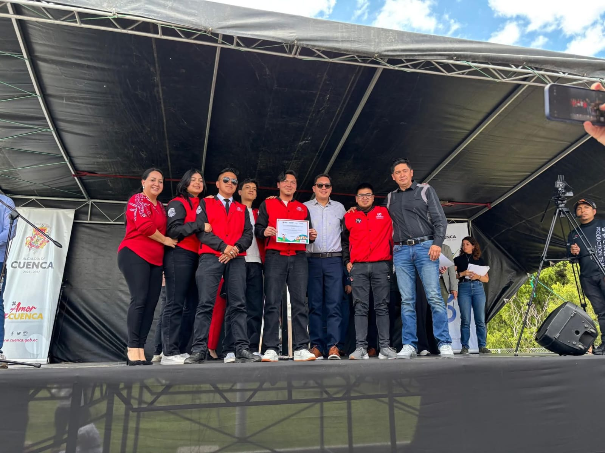
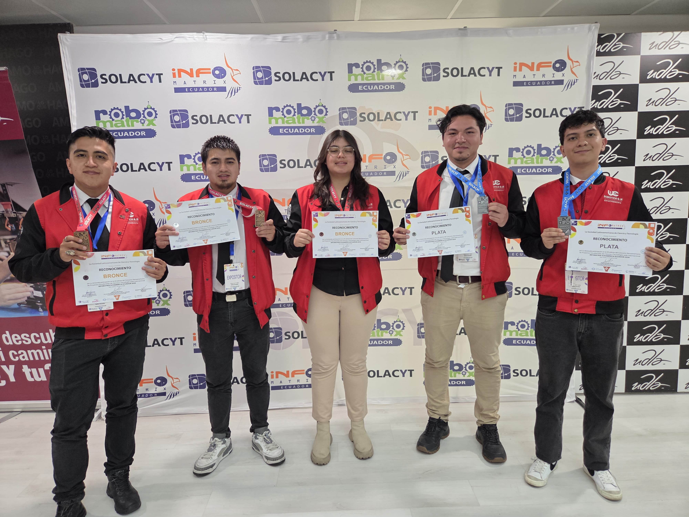
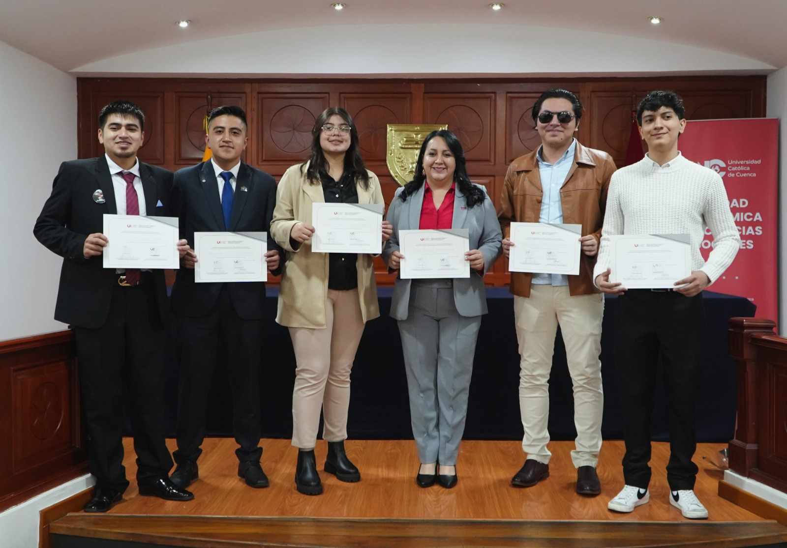
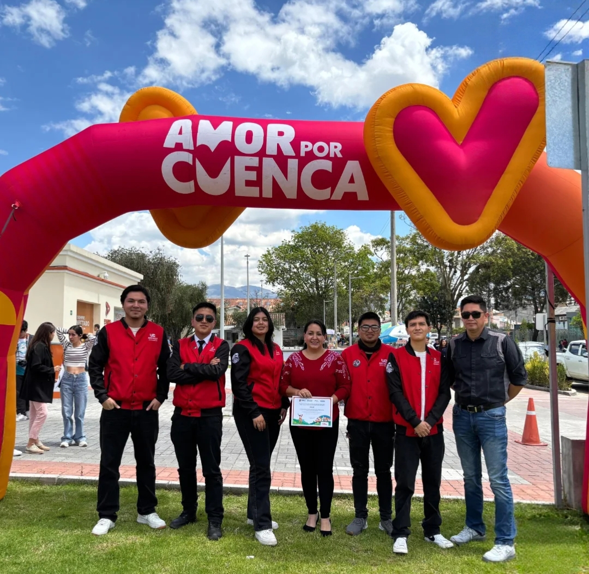

AYNI-BOT
Sistema Robótico Flotante para Monitoreo Inteligente de Calidad del Agua
Sistema Robótico Flotante para Monitoreo Inteligente de Calidad del Agua
AYNI-BOT es un sistema robótico flotante diseñado para el monitoreo continuo de parámetros fisicoquímicos del agua en tiempo real. El sistema integra sensores especializados, procesamiento embebido y transmisión IoT.




sebastian.caiza@est.ucacue.edu.ec
john.macas@est.ucacue.edu.ec
ginevra.gonzalez@est.ucacue.edu.ec
mao.jaramilloz@est.ucacue.edu.ec
jose.reinoso@est.ucacue.edu.ec
juan.pazmino@ucacue.edu.ec
djimenezr@ucacue.edu.ec
